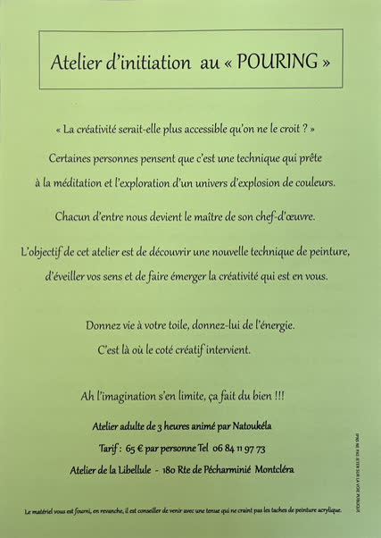
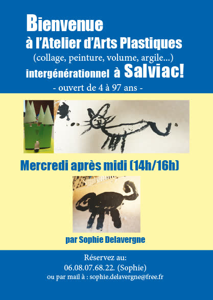
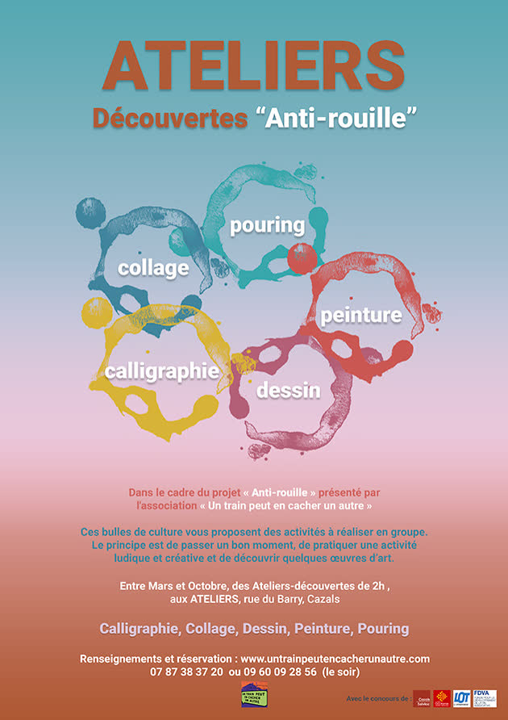
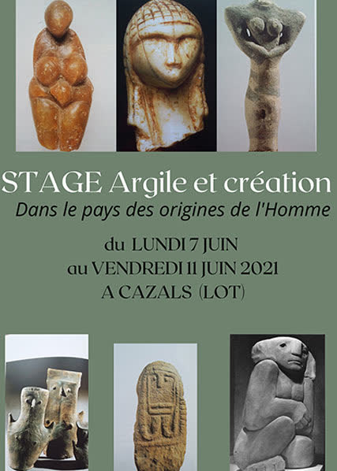

Vous pouvez suivre des cours et des stages avec certains membres de l’association, qui ouvrent leurs ateliers pour de l’initiation ou du perfectionnement.
- 13 octobre 2026
Atelier d’initiation au « pouring »
Les détails, horaires et contacts sont sur l’affiche.

- 27 mai 2026
Atelier d’arts plastiques intergénérationnel
Salviac · Par Sophie Delavergne
Collage, peinture, volume, argile… Ouvert de 4 à 97 ans, le mercredi après-midi de 14 h à 16 h.

- De mars à octobre, 2022 à 2024
Ateliers-découvertes « Anti-rouille »
Les Ateliers, rue du Barry, Cazals
Des ateliers ponctuels de découverte de pratiques artistiques, par les artistes eux-mêmes : calligraphie, collage, dessin, peinture, pouring. Offre reconduite en 2023 et en 2024.

- Juin 2021
Stage « Argile et création »
Cazals · Par Sophie Latappy, artiste-membre du Train
« Dans le pays des origines de l’Homme », du lundi 7 au vendredi 11 juin 2021, un stage articulé autour de la représentation du corps de la femme.

- Depuis octobre 2018
Les cours de Jérôme Bédès
La Mouline, Florimont-Gaumier
Jérôme Bédès donne des cours à La Mouline.
- Stage de 5 jours
Taille de pierre, sculpture en taille directe
Atelier de Gérard Boulanger · Par Gérard Boulanger, artisan-tailleur et sculpteur sur pierre
« Depuis l’époque des premiers bâtisseurs, le travail de la pierre a toujours été une voie de connaissance de soi. » À partir d’un dessin, on travaille une pierre tendre de Dordogne ou une pierre marbrière demi-dure, en bas-relief ou en volume. L’accent est mis sur la technique et l’outillage. Ouvert à partir de 16 ans, avec ou sans expérience. La pierre est lourde à transporter : prévoyez un projet de taille moyenne !
Un conseil d’Alexandra du Moulin aux adhérents : comment rédiger un communiqué de presse efficace (nouvel onglet).